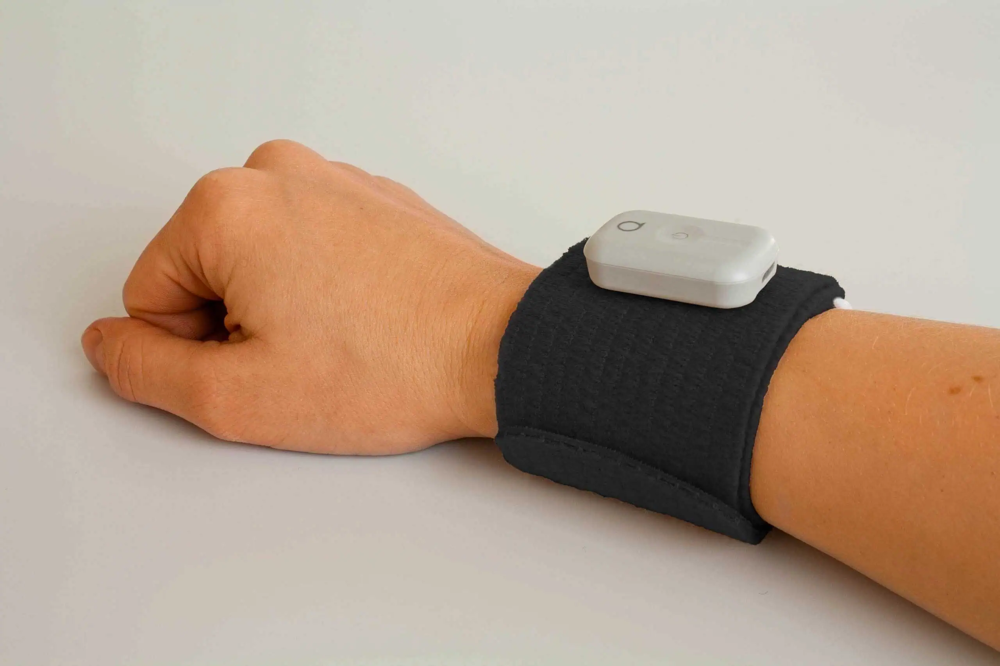
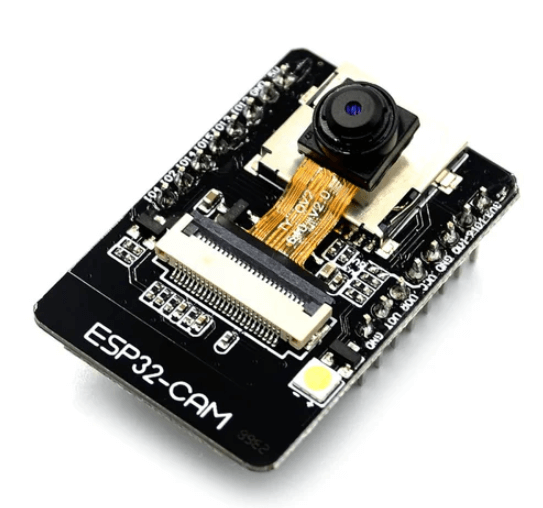
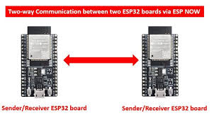
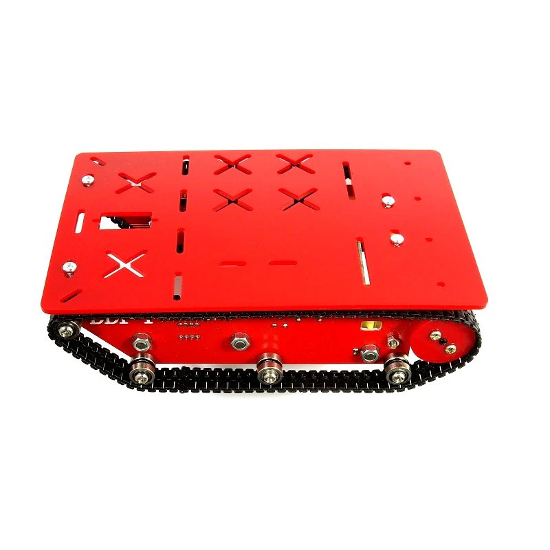
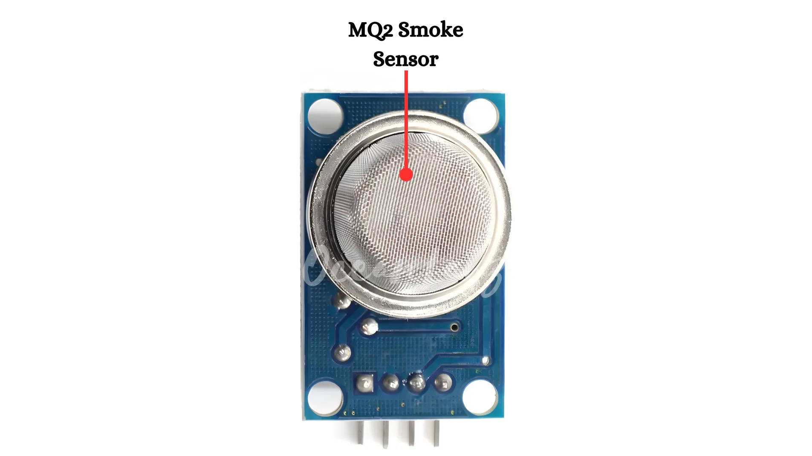
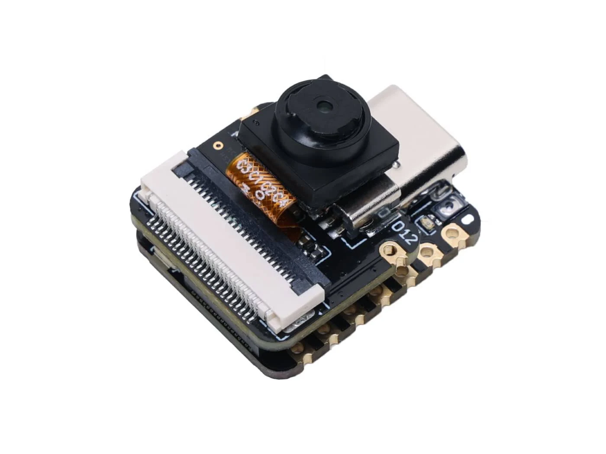
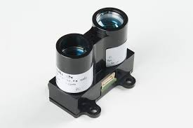
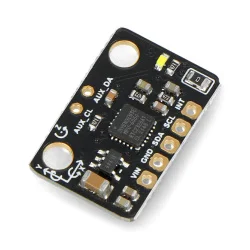

Project Mayhem develops intelligent robotic systems capable of operating where humans cannot safely go. Our mission is to improve surveillance, monitoring, and emergency response through innovative robotics.
Explore Project Meet The TeamProject Mayhem is a robotics organization focused on building practical technology for hazardous and inaccessible environments.
Many places are inaccessible or unsafe for humans due to radiation, toxic gases, fire hazards, and extreme environmental conditions. These areas often lack surveillance, slowing rescue efforts and reducing situational awareness.
We developed a gesture-controlled rover equipped with a live camera feed. Operators can remotely navigate dangerous environments while receiving real-time visual information from the field.
Flagship project of Project Mayhem.
A gesture-controlled surveillance rover featuring IMU-based navigation, wireless communication, ESP-CAM live streaming, and a tank-style chassis capable of navigating difficult terrain. Designed for surveillance, monitoring, and emergency-response scenarios.

Navigate the rover naturally using IMU-based hand gestures for precise and intuitive movement.

Receive a live video stream from hazardous and inaccessible locations in real time.

Dedicated transmitter and receiver system for reliable remote operation.

Tracked rover platform capable of traversing rough terrain and obstacles.
Our roadmap focuses on expanding the rover's capabilities through advanced sensing, autonomy, and environmental intelligence.

Detect hazardous gases and smoke in dangerous environments to improve situational awareness and safety.

Improved video quality, wider field of view, and enhanced low-light performance for surveillance.

AI-assisted route planning and obstacle avoidance to reduce operator workload.

Generate real-time maps of hazardous environments to support rescue and surveillance operations.